Universal Functions (ufuncs) & Mathematical Operations
Element-wise mathematical execution, fast compiled C transformations, logarithmic/exponential functions, trigonometry with radians, element-wise min/max, clipping, and multidimensional reductions.
📑 Topic Navigation & Learning Roadmap
Is comprehensive lesson mein hum NumPy ke universal functions (ufuncs) aur mathematical toolkit ko step-by-step master karenge:
0️⃣ Opening: Meet NumPy's Mathematical Toolkit
Pichle topic (Topic 9: Vectorized Operations) mein tumne dekha ki NumPy kaise arrays par loops ke bina lightning-fast calculation perform karta hai. Lekin jab baat aati hai square root nikalne ki, logarithms compute karne ki, ya complex trigonometry solve karne ki, tab NumPy ke paas ek specialised toolkit hoti hai jise Universal Functions (ufuncs) kaha jata hai.
[45, 60, 72, 81, 95].
Ab teacher ko teen alag-alag mathematical operations karne hain:
- Sabhi students ke marks ka Square nikalna hai.
- Sabhi marks ka Square Root calculate karna hai.
- Poori class ka single overall Average (Mean) find karna hai.
import numpy as np # 1. 5 Students ke marks ka 1D array marks = np.array([45, 60, 72, 81, 95]) # Operation 1: Element-wise Square (ufunc) sq = np.square(marks) # Operation 2: Element-wise Square Root (ufunc) sqr = np.sqrt(marks) # Operation 3: Whole-array Summary / Reduction (Not a ufunc!) avg = np.mean(marks) print("Original Marks:", marks) print("np.square(marks):", sq) print("np.sqrt(marks):", sqr) print("np.mean(marks):", avg)
Line-by-Line Breakdown: Ye Results Alag Kyun Hain?
np.square(marks): Har student ke marks ka individual square nikalta hai. Input size 5 tha, aur output bhi 5 numbers ka array bana:[2025, 3600, 5184, 6561, 9025].np.sqrt(marks): Har element par floating-point square root calculate karta hai. Iska output bhi same size (5,) ka array hai:[6.71, 7.75, 8.49, 9.00, 9.75].np.mean(marks): Pure array ke saare elements ko add karke unki count (5) se divide karta hai. Iska output koi naya array nahi, balki ek single scalar number70.6hai!
for loop likhe?
Iska answer hai: Universal Functions (ufuncs)!
🅰️ Section A: What are Universal Functions (ufuncs)?
NumPy mein Universal Function (ufunc) ek aisa function hota hai jo ndarray ke har ek element par fast,
element-by-element operation perform karta hai.
Ye functions standard C language mein compiled hote hain, isliye inme Python interpreter ka overhead nahi hota.
Key Characteristics of ufuncs
- Element-Wise Execution: Ye array ke har element par parallel ya fast compiled loops mein run hote hain.
- Broadcasting Support: Agar do arrays ke shapes alag hain (jaise ek matrix aur ek row vector), toh ufuncs automatically Broadcasting rules follow karte hain.
- Type Casting & Buffering: Ufuncs automatic type conversion handle karte hain (e.g., integer array par
np.sqrt()lene par floating-point output generate hota hai). - Optional Output Parameter (
out=): Tum calculated results ko direct kisi pre-allocated array mein store kar sakte ho bina extra memory allocate kiye.
•
np.add, np.sin, np.sqrt: Ye true ufuncs hain (in ka type numpy.ufunc hota hai).•
np.mean, np.sum, np.median: Ye array reduction / summary functions hain jo multiple values ko reduce karke single scalar ya lower-dimension array banate hain.
Unary ufuncs vs Binary ufuncs
Operands (input arrays) ki sankhya ke aadhar par ufuncs ko do pramukh categories mein baanta gaya hai:
- Unary ufuncs: Ye sirf ek input array lete hain aur utne hi elements ka output array return karte hain. Examples:
np.abs(),np.sqrt(),np.square(),np.sin(),np.exp(). - Binary ufuncs: Ye do input arrays (ya ek array aur ek scalar) lete hain aur corresponding elements par operation perform karte hain. Examples:
np.add(),np.subtract(),np.multiply(),np.maximum().
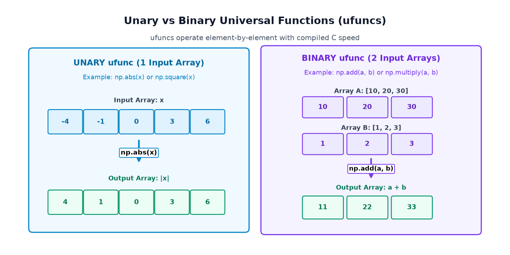
Unary ufunc Examples
import numpy as np # Unary Example 1: Absolute Value (np.abs) values1 = np.array([-4, -1, 0, 3, 6]) abs_res = np.abs(values1) # Unary Example 2: Square (np.square) values2 = np.array([2, 3, 4]) sq_res = np.square(values2) print("np.abs([-4, -1, 0, 3, 6]) →", abs_res) print("np.square([2, 3, 4]) →", sq_res)
Binary ufunc Examples
import numpy as np # Binary Example 1: Addition of two vectors a = np.array([10, 20, 30]) b = np.array([1, 2, 3]) sum_res = np.add(a, b) # Binary Example 2: Multiplication of prices and quantities prices = np.array([100, 200, 300]) quantities = np.array([2, 3, 4]) mult_res = np.multiply(prices, quantities) print("np.add(a, b) →", sum_res) print("Equivalent a + b →", a + b) print("np.multiply(p, q) →", mult_res) print("Equivalent p * q →", prices * quantities)
+ ya * likhte ho, toh behind-the-scenes NumPy automatically
np.add() aur np.multiply() ufunc hi call karta hai.
Dono ka performance aur output 100% identical hota hai!
🅱️ Section B: Arithmetic ufuncs & Mathematical Operators
NumPy sabhi standard mathematical arithmetic operations ke liye dedicated ufuncs provide karta hai. Jab operands ke shapes compatible hote hain, ye functions corresponding pairs of elements par operate karte hain.
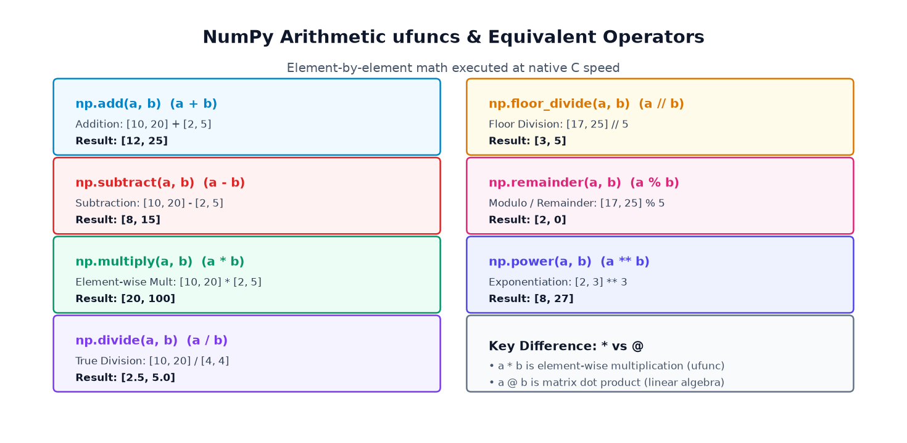
| Operation | NumPy ufunc | Operator | Sample Expression | Result Description |
|---|---|---|---|---|
| Addition | np.add(a, b) |
a + b |
np.add([10, 20], [2, 5]) |
[12, 25] — Element-wise sum |
| Subtraction | np.subtract(a, b) |
a - b |
np.subtract([10, 20], [2, 5]) |
[8, 15] — Element-wise difference |
| Multiplication | np.multiply(a, b) |
a * b |
np.multiply([10, 20], [2, 5]) |
[20, 100] — Element-wise product |
| True Division | np.divide(a, b) |
a / b |
np.divide([10, 20], [4, 4]) |
[2.5, 5.0] — Standard float division |
| Floor Division | np.floor_divide(a, b) |
a // b |
np.floor_divide([17, 25], 5) |
[3, 5] — Integer quotient (rounded down) |
| Remainder / Modulo | np.remainder(a, b) |
a % b |
np.remainder([17, 25], 5) |
[2, 0] — Division ka remainder |
| Power / Exponent | np.power(a, b) |
a ** b |
np.power([2, 3], 3) |
[8, 27] — Base raised to power |
Example 1: Kirana Shop Daily Revenue
Ek dukaan mein 3 alag-alag grocery items ki prices aur unki sold quantities ka array hai:
import numpy as np prices = np.array([100, 250, 400]) # Har item ka rate (₹) quantities = np.array([2, 3, 2]) # Kitne units bike # Element-wise multiplication se per-item revenue generate hua revenue = np.multiply(prices, quantities) print("Item-wise Revenue:", revenue) print("Total Revenue (₹):", np.sum(revenue))
Example 2: Warehouse Remaining Stock Calculation
import numpy as np initial_stock = np.array([50, 80, 100]) units_sold = np.array([12, 25, 40]) # np.subtract element-wise stock bacha hua calculate karta hai remaining = np.subtract(initial_stock, units_sold) print("Initial Stock:", initial_stock) print("Sold Units: ", units_sold) print("Remaining: ", remaining)
np.multiply vs @ Matrix Dot Product* aur @ mein confuse ho jaate hain:•
np.multiply(A, B) ya A * B: Element-wise multiplication karta hai (A[i,j] * B[i,j]).•
A @ B ya np.matmul(A, B): Linear algebra matrix dot product (row-by-column dot product) karta hai! Dono ke mathematical rules bilkul alag hain.
🅲 Section C: Absolute Values, Squares, Roots, and Powers
Data science aur machine learning mein error calculations, distance metrics (Euclidean distance), aur variance nikalte waqt roots aur powers sabse zyada use hone wale ufuncs hain.
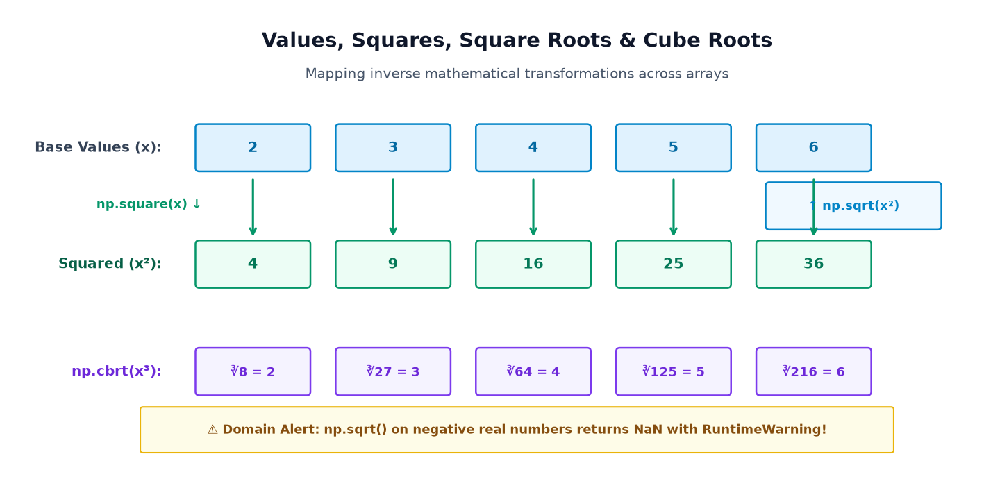
1. np.abs() — Sensor Deviations & Errors
Jab kisi physical device ka sensor reading target value se deviate karta hai, toh deviation positive ya negative dono ho sakta hai. Error ka exact magnitude janne ke liye hum absolute value lete hain:
import numpy as np # Temperature sensor deviations from ideal 50°C deviations = np.array([-2.5, 1.5, -4.0, 3.0]) magnitude = np.abs(deviations) print("Raw Deviations: ", deviations) print("Absolute Errors:", magnitude)
2. np.sqrt(), np.cbrt(), and np.power()
Plot areas se square plots ki side length nikalna aur 3D volumes se cube edges nikalna:
import numpy as np # 5 Square Plots ke areas (sq. meters) areas = np.array([4, 9, 16, 25, 36]) side_lengths = np.sqrt(areas) # 4 Cube containers ke volumes (cubic meters) volumes = np.array([8, 27, 64, 125]) cube_edges = np.cbrt(volumes) print("Plot Areas: ", areas) print("Side Lengths: ", side_lengths) print("Cube Volumes: ", volumes) print("Cube Edges: ", cube_edges)
3. Negative Square Roots & Integer Reciprocal Caveats
np.sqrt() nikala jaye, toh NumPy error throw karke crash nahi hota!
Balki wo nan (Not a Number) return karta hai aur ek RuntimeWarning: invalid value encountered in sqrt raise karta hai.
Complex numbers calculate karne ke liye complex input (e.g. np.array([-4+0j])) pass karna zaroori hai.
np.reciprocal(np.array([2, 4, 5])) call karoge, toh output [0, 0, 0] aayega!
Kyunki integers mein 1 // 2 = 0 ho jata hai. Hamesha float array use karo:
np.reciprocal(np.array([2.0, 4.0, 5.0])) → [0.5, 0.25, 0.2].
🅳 Section D: Exponential and Logarithmic Functions
Exponential growth ($e^x$) aur Logarithmic scales ($\ln x, \log_{10} x$) modern computing, financial modeling, physics signal processing, aur machine learning classification (cross-entropy loss function) ki backbone hain.
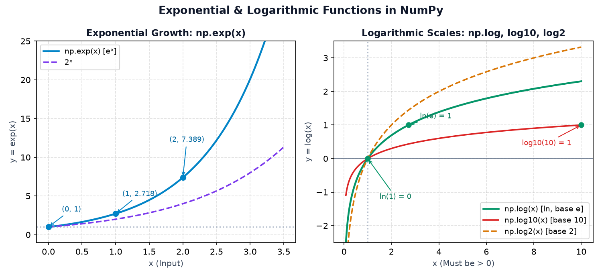
Exponential Function: np.exp(x)
Mathematical constant $e \approx 2.718281828...$ hota hai.
np.exp(x) array ke har element $x$ ke liye $e^x$ calculate karta hai:
import numpy as np values = np.array([0, 1, 2]) exp_result = np.exp(values) print("Inputs: ", values) print("np.exp: ", np.round(exp_result, 4)) print("Note: e^0 = 1.0, e^1 = 2.7183, e^2 = 7.3891")
Logarithmic Functions: np.log(), np.log10(), np.log2()
Logarithm inverse power hota hai: "Is base ko kitni power par chadhayein ki input value mil jaye?"
np.log(x): Natural Logarithm (base $e$) — Mathematical analysis aur machine learning loss computation mein default hota hai.np.log10(x): Common Logarithm (base 10) — Earthquake Richter scale, sound decibels (dB), aur pH value calculations mein use hota hai.np.log2(x): Binary Logarithm (base 2) — Information theory, computer science binary trees, aur entropy mein use hota hai.
import numpy as np # Base 10 logarithms powers_of_10 = np.array([1, 10, 100, 1000]) log10_res = np.log10(powers_of_10) # Natural logarithm (base e) e_powers = np.array([1.0, np.e, np.e**2]) ln_res = np.log(e_powers) # Binary logarithm (base 2) binary_vals = np.array([1, 2, 4, 8, 16]) log2_res = np.log2(binary_vals) print("np.log10([1, 10, 100, 1000]) →", log10_res) print("np.log([1, e, e^2]) →", np.round(ln_res, 2)) print("np.log2([1, 2, 4, 8, 16]) →", log2_res)
•
np.log(0.0) calculate karne par NumPy -inf return karta hai aur divide by zero warning deta hai.•
np.log(-5.0) calculate karne par NumPy nan return karta hai aur invalid value warning deta hai.Controlled scientific processing ke liye hamesha
np.errstate() use karein ya values ko np.clip(x, 1e-9, None) se sanitize karein.
🅴 Section E: Rounding and Precision
Numerical data cleaning aur scientific measurements mein floating-point numbers ko neat decimals ya integers mein round karna padta hai. NumPy chaar alag-alag rounding ufuncs provide karta hai, aur in sabka mathematical behaviour different hota hai.
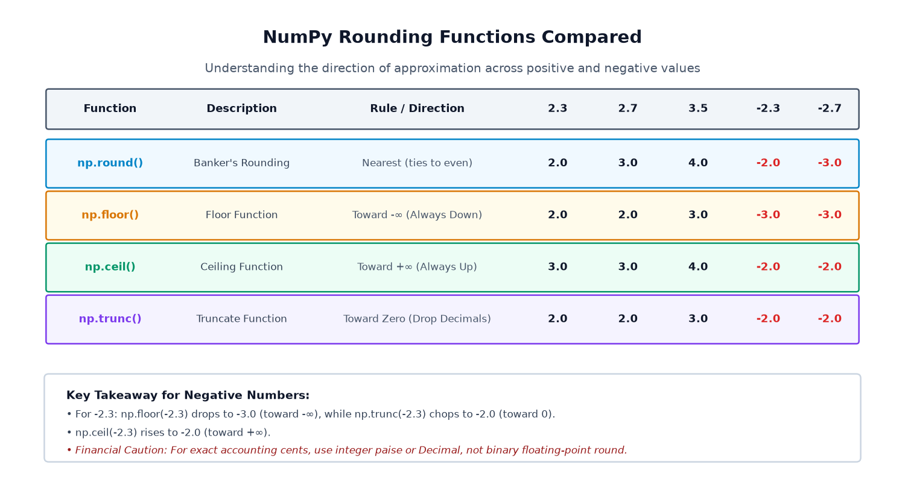
The 4 Core Rounding Functions
np.round(a, decimals=0): Banker's Rounding (Round half to even) — Nearest integer par round karta hai. Agar value exact 0.5 par ho, toh nearest even integer choose karta hai (e.g. 2.5 → 2.0, lekin 3.5 → 4.0). Ye statistical bias reduce karta hai!np.floor(a): Round toward $-\infty$ — Value ko hamesha niche (downwards) round karta hai.2.7 → 2.0, aur negative mein-2.3 → -3.0!np.ceil(a): Round toward $+\infty$ — Value ko hamesha upar (upwards) round karta hai.2.3 → 3.0, aur negative mein-2.7 → -2.0!np.trunc(a): Round toward Zero — Simply decimal part ko cut kar deta hai bina direction shift kiye.2.7 → 2.0aur-2.7 → -2.0.
import numpy as np values = np.array([2.3, 2.7, 3.5, -2.3, -2.7]) print("Inputs: ", values) print("np.round:", np.round(values)) print("np.floor:", np.floor(values)) print("np.ceil: ", np.ceil(values)) print("np.trunc:", np.trunc(values))
Example 2: E-Commerce Product Prices Rounding
import numpy as np prices = np.array([99.456, 149.789, 299.995]) rounded_prices = np.round(prices, decimals=2) print("Raw Prices: ", prices) print("Rounded (2 dec):", rounded_prices)
0.1 + 0.2 != 0.3 hota hai.
Financial accounting mein hamesha currency ko integer paise (₹1 = 100 paise) mein ya Python ke decimal.Decimal module mein handle karein.
🅵 Section F: Trigonometric Functions & Radians
NumPy pure mathematical trigonometric functions support karta hai: np.sin(), np.cos(), aur np.tan().
Lekin yahan sabse bada beginner trap hota hai Angle Units ka.
np.sin(30) likhoge toh NumPy 30 ko 30 Radians maan lega,
aur answer -0.988 aayega, jabki $30^\\circ$ ka sine $0.5$ hona chahiye tha!Degrees ko radians mein convert karne ke liye
np.deg2rad() use karna mandatory hai:
sin_30 = np.sin(np.deg2rad(30)) # Correct: 0.5
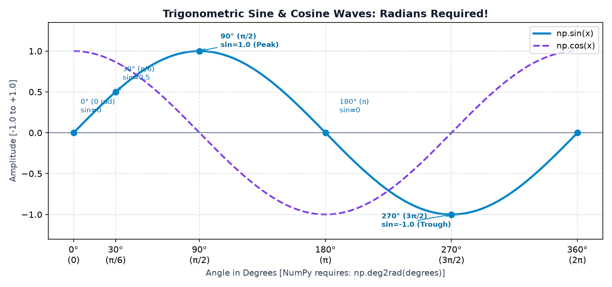
Example 1: Converting Degrees to Radians
import numpy as np degrees = np.array([0, 30, 45, 60, 90]) # Radians = Degrees * (pi / 180) radians = np.deg2rad(degrees) print("Degrees:", degrees) print("Radians:", np.round(radians, 4))
Example 2: Calculating Sines, Cosines, and Inverse Conversion
import numpy as np degrees = np.array([0, 30, 45, 60, 90]) rad = np.deg2rad(degrees) sines = np.sin(rad) cosines = np.cos(rad) print("Sine Values: ", np.round(sines, 4)) print("Cosine Values:", np.round(cosines, 4)) print("Back to Deg: ", np.rad2deg(rad))
• Audio & Wave Processing: Sound frequencies sine waves ke linear combination (Fourier analysis) se banti hain.
• Robotics & Drone Kinematics: Joint angles se robotic arms ke x, y, z physical coordinates calculate karne ke liye.
• Game Development & Physics Simulation: Projectile motion, camera orbital rotations, aur cyclic oscillating pendulums.
🅶 Section G: Minimum, Maximum, Clipping & Conditional Selection
NumPy mein element-wise comparison aur values ko bound (clamp) karne ke liye specialized ufuncs hote hain.
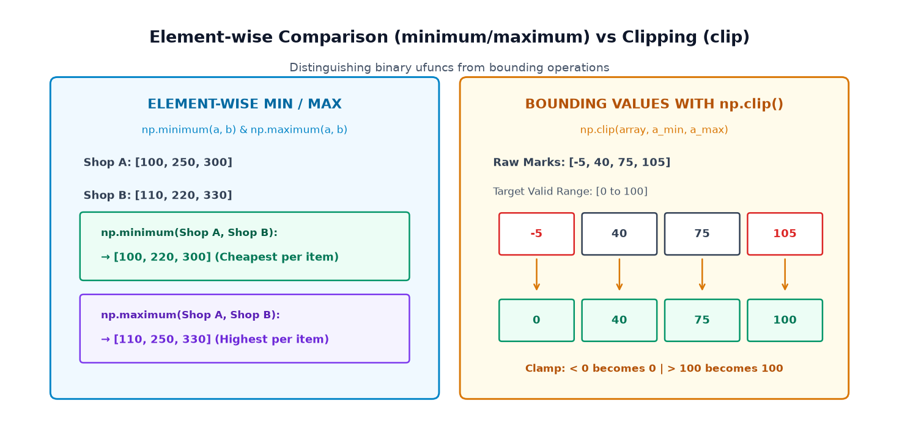
1. np.minimum() and np.maximum() vs np.min() and np.max()
np.minimum(a, b) aur np.maximum(a, b): Binary element-wise ufuncs hain. Ye do arrays ke corresponding positions ko compare karke ek naya array banate hain.•
np.min(a) aur np.max(a): Summary / reduction functions hain jo ek hi array ke saare elements mein se single absolute lowest ya highest number return karte hain.
import numpy as np shop_a = np.array([100, 250, 300]) shop_b = np.array([110, 220, 330]) cheapest = np.minimum(shop_a, shop_b) priciest = np.maximum(shop_a, shop_b) print("Shop A Prices:", shop_a) print("Shop B Prices:", shop_b) print("Lower Prices: ", cheapest) print("Higher Prices:", priciest)
2. np.clip() — Clamping Data to Valid Bounds
Agar tumhare data mein extreme outliers ya invalid entry aa jayein, toh np.clip(a, a_min, a_max)
unhe specified range ke andar clamp kar deta hai:
import numpy as np # Raw marks containing entry errors (-5 and 105) raw_marks = np.array([-5, 40, 75, 105]) # Clamp between 0 and 100 sanitized = np.clip(raw_marks, 0, 100) print("Raw Marks: ", raw_marks) print("Sanitized Marks:", sanitized)
3. np.where(condition, x, y) — Ternary Conditional Selection
Agar passing criteria ke mutabiq weak students ko 10 grace marks dene hain aur baaki sabko unchanged rakhna hai:
import numpy as np marks = np.array([28, 45, 31, 82]) # Agar marks < 33, give marks + 5, else keep marks as is grace_marks = np.where(marks < 33, marks + 5, marks) print("Original Marks: ", marks) print("After Grace Marks:", grace_marks)
🅷 Section H: Aggregation and Mathematical Reductions (`axis`)
Element-wise ufuncs har input element ke liye ek output element produce karte hain. Lekin data analysis mein aksar hume data ko summarize karna hota hai: total revenue nikalna, class average find karna, ya standard deviation measure karna. NumPy inhe Reductions kehta hai.
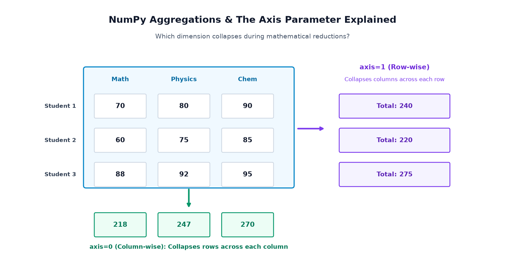
Demystifying the `axis` Parameter
"Specified axis collapse (collapse/disappear) ho jati hai aur baaki dimensions bachti hain!"
axis=0(Column-wise reduction): Rows collapse ho jati hain. Result array ka length number of columns ke barabar hota hai.axis=1(Row-wise reduction): Columns collapse ho jati hain. Result array ka length number of rows ke barabar hota hai.
Example: 3 Students × 3 Subjects Academic Matrix
import numpy as np # 3 Students (rows), 3 Subjects [Math, Physics, Chem] (columns) marks_2d = np.array([ [70, 80, 90], # Student 1 [60, 75, 85], # Student 2 [88, 92, 95] # Student 3 ]) # 1. Total marks scored by each student (axis=1 collapses columns) student_totals = np.sum(marks_2d, axis=1) # 2. Total marks scored across all students in each subject (axis=0 collapses rows) subject_totals = np.sum(marks_2d, axis=0) # 3. Overall Class Metrics overall_mean = np.round(np.mean(marks_2d), 2) overall_std = np.round(np.std(marks_2d), 2) overall_var = np.round(np.var(marks_2d), 2) print("Student Totals (axis=1):", student_totals) print("Subject Totals (axis=0):", subject_totals) print("Overall Class Mean: ", overall_mean) print("Overall Std Deviation: ", overall_std) print("Overall Variance: ", overall_var)
np.std() population standard deviation calculate karta hai jahan denominator $N$ hota hai (ddof=0).Agar tum sample statistics calculate kar rahe ho (jahan sample variance ka denominator $N-1$ hota hai), toh hamesha parameter pass karein:
np.std(data, ddof=1).
🅸 Section I: Mathematical Operations with Broadcasting
NumPy universal functions ka sabse powerful feature ye hai ki wo automatically Broadcasting rules (Topic 8) follow karte hain. Iska matlab agar operands ka shape exact match nahi karta, lekin compatible hai, toh NumPy smaller array ko logically stretch karke element-wise math perform kar deta hai bina actual copy banaye!
Example 1: Subject-Wise Bonus Addition
Suppose 2 students hain aur 3 subjects hain (shape (2, 3)).
Teacher har subject ke difficulty ke mutabiq alag-alag bonus marks dena chahti hai: [2, 3, 5] (shape (3,)).
import numpy as np marks = np.array([ [60, 70, 80], # Student 1 [75, 85, 90] # Student 2 ]) # Shape: (2, 3) bonus = np.array([2, 3, 5]) # Shape: (3,) # Binary ufunc np.add uses broadcasting updated_marks = np.add(marks, bonus) print("Original Marks:\n", marks) print("Subject Bonus:\n", bonus) print("Updated Marks:\n", updated_marks)
Example 2: Sensor Calibration Matrix Offsets
import numpy as np readings = np.array([ [20.5, 21.0, 22.0], [19.5, 20.0, 21.0] ]) # Shape: (2, 3) offsets = np.array([0.5, -0.2, 0.3]) # Shape: (3,) corrected = np.add(readings, offsets) print("Raw Readings:\n", readings) print("Corrected Readings:\n", np.round(corrected, 2))
(2, 3) array mein (2,) vector add karne ki koshish karoge:
a = np.ones((2, 3)) b = np.array([10, 20]) # Shape: (2,) # np.add(a, b) → ValueError: operands could not be broadcast together with shapes (2,3) (2,)Fix: Trailing dimension match nahi ho rahi! Vector ko column matrix mein reshape karein:
b[:, np.newaxis] (shape (2, 1)). Ab ye dimension-0 ke sath perfectly broadcast ho jayega!
🅹 Section J: Real-Life Mathematical Applications (7 In-Depth Case Studies)
NumPy ke universal functions real-world data science aur engineering problems mein kaise apply hote hain? Aao 7 realistic Indian industry case studies dekhein:
Application 1: Student Examination Marks & Grading Analytics
Problem: Ek coaching class ke 4 students ke marks matrix par subject-wise analysis aur student averages calculate karne hain.
import numpy as np students = ["Aryan", "Pooja", "Rohan", "Sneha"] marks = np.array([ [68, 74, 85], [61, 66, 75], [88, 92, 100], [43, 50, 60] ]) st_avgs = np.round(np.mean(marks, axis=1), 2) st_stds = np.round(np.std(marks, axis=1), 2) for s, avg, std in zip(students, st_avgs, st_stds): print(f"{s:6s} -> Average: {avg:5.2f} | Spread (Std Dev): {std:4.2f}")
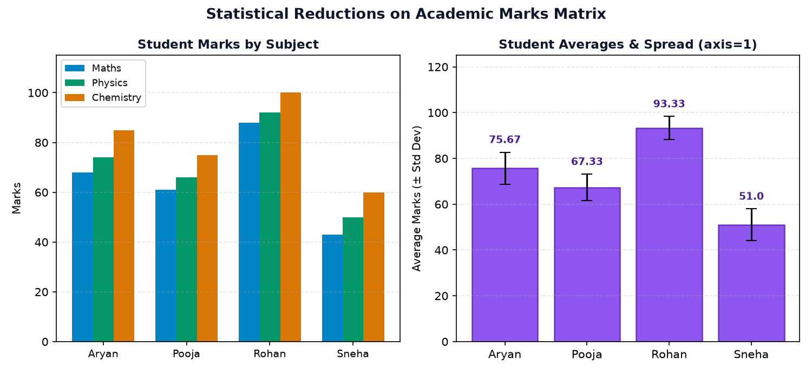
Application 2: Commercial Stationery Store Inventory & Revenue
Problem: Store inventory mein notebook, pen, backpack, aur calculator ka stock aur unki pricing hai. Total revenue aur maximum earning item identify karna hai.
import numpy as np items = ["Notebooks", "Pens", "Backpacks", "Calculators"] prices = np.array([120, 250, 450, 80]) quantities = np.array([5, 3, 2, 10]) revenues = np.multiply(prices, quantities) total_rev = np.sum(revenues) print("Product Revenues (₹):", revenues) print("Total Revenue: ₹", total_rev) print("Top Earning Item Revenue: ₹", np.max(revenues))
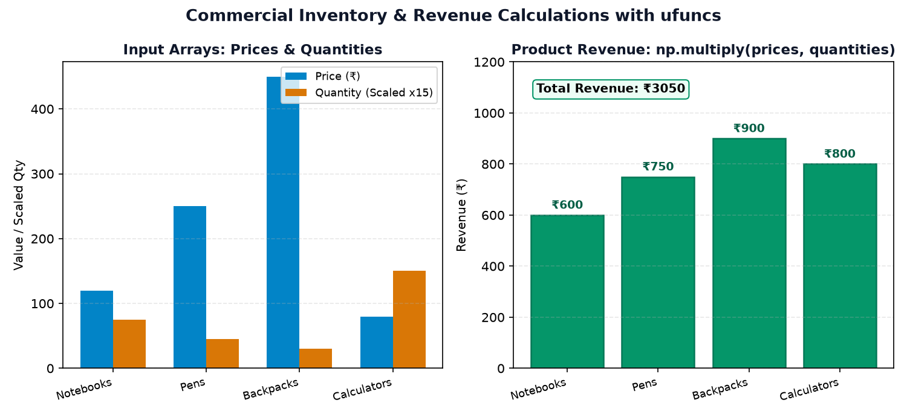
Application 3: Weather Station Celsius to Fahrenheit Conversion
Problem: Ek automated weather station Celsius mein temperature record karta hai. Data analysis software US Fahrenheit format mein values chahta hai: $F = C \times \frac{9}{5} + 32$.
import numpy as np celsius = np.array([15.0, 22.5, 31.0, 26.5]) # Combined ufuncs: np.add and np.multiply fahrenheit = np.add(np.multiply(celsius, 9/5), 32) print("Recorded Celsius: ", celsius) print("Converted Fahrenheit:", np.round(fahrenheit, 2))
Application 4: Industrial Boiler Temperature Sensor Deviation
Problem: Chemical boiler ka target operating temperature $50.0^\circ\text{C}$ hai. 6 sensors ke readings target se kitna deviate kar rahe hain aur kaunsa sensor tolerance band ($\pm 2.0^\circ\text{C}$) se bahar hai?
import numpy as np readings = np.array([49.2, 53.5, 48.0, 56.1, 45.3, 51.4]) target = 50.0 abs_deviations = np.abs(np.subtract(readings, target)) out_of_spec = abs_deviations > 2.0 print("Sensor Readings: ", readings) print("Absolute Deviations: ", np.round(abs_deviations, 2)) print("Alarm Triggered: ", out_of_spec)
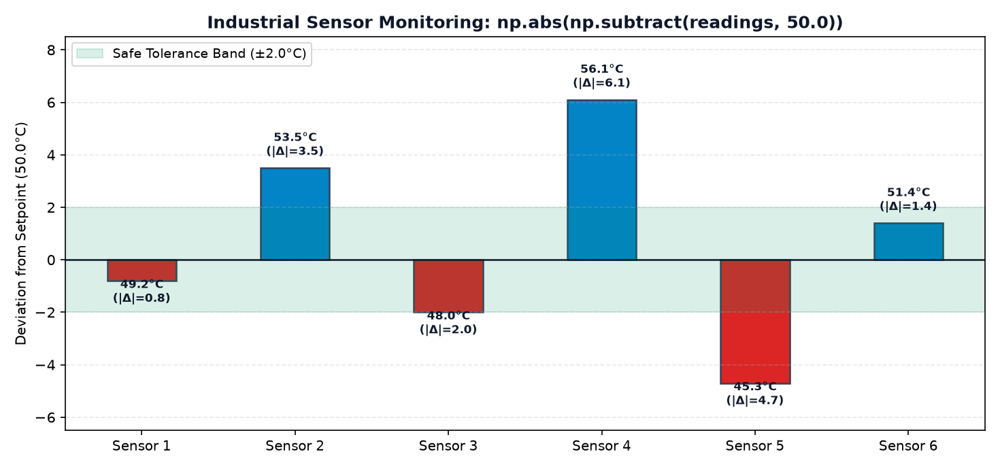
Application 5: Employee Salary Increment & Deductions
Problem: Corporate HR department ko 3 employees ke base salary par 10% annual performance increment apply karna hai:
import numpy as np salaries = np.array([32000.50, 45500.75, 58200.25]) new_salaries = np.round(salaries * 1.10, decimals=2) print("Current Base Salaries (₹):", salaries) print("After 10% Increment (₹): ", new_salaries)
Application 6: Computer Vision RGB Pixel Brightness Boost
Problem: Image pixels $0$ (pure black) se $255$ (pure white) ke beech hote hain.
Jab hum brightness increase karne ke liye $+40$ add karte hain, toh kuch pixels $255$ se exceed kar jate hain.
np.clip() overflow ko prevent karta hai!
import numpy as np pixels = np.array([45, 120, 230, 250], dtype=np.int32) boosted = np.add(pixels, 40) clipped = np.clip(boosted, 0, 255) print("Original Pixels: ", pixels) print("After +40 Addition: ", boosted, "← 270 & 290 are INVALID!") print("After np.clip(0, 255): ", clipped)
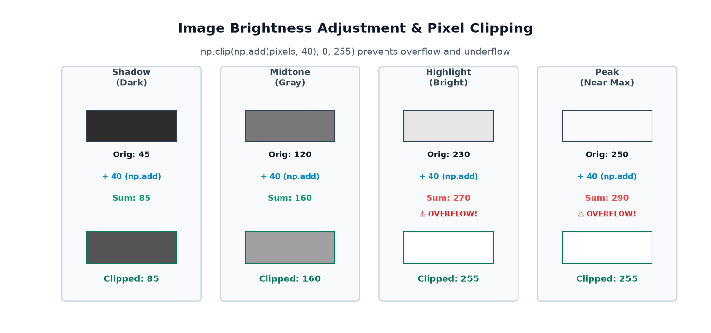
Application 7: Scientific Sound Intensity to Decibel (dB) Conversion
Problem: Sound sound power intensities ka dynamic range bahut wide hota hai ($10^1$ se $10^5$). Acoustic engineering mein decibel formula hota hai: $\text{dB} = 10 \cdot \log_{10}(I)$.
import numpy as np intensities = np.array([10.0, 100.0, 1000.0, 100000.0]) decibels = np.multiply(10, np.log10(intensities)) print("Sound Intensities (W/m²):", intensities) print("Decibel Scale (dB): ", decibels)
🅺 Section K: Common Mistakes & Debugging Guide
NumPy mathematical operations use karte waqt beginners aksar 6 critical mistakes karte hain. Aao har mistake ka reason, actual error behavior, aur verified fix samjhein:
Misleading Code:
angle = 30 result = np.sin(angle) # Expected 0.5, but gets -0.988031624!
Why it happens: NumPy's np.sin accepts radians, not degrees. 30 is interpreted as 30 radians (~1718 degrees)!
result = np.sin(np.deg2rad(30)) # Returns exact 0.5
Misleading Code:
vals = np.array([-4.0, 9.0]) roots = np.sqrt(vals) # Emits RuntimeWarning: invalid value encountered in sqrt # Returns [nan, 3.]
Why it happens: In real-number arithmetic, square root of a negative number does not exist. NumPy returns NaN.
# 1. Sanitize with np.maximum/np.clip OR convert to complex safe_vals = np.maximum(vals, 0.0) roots = np.sqrt(safe_vals) # Returns [0., 3.]
np.maximum() with np.max()Misleading Code:
a = np.array([10, 50, 30]) b = np.array([20, 40, 35]) highest = np.max(a, b) # TypeError: cannot interpret 'b' as an axis integer!
Why it happens: np.max(a) is an aggregation function for a single array. To compare two arrays element-wise, you MUST use binary ufunc np.maximum(a, b).
element_wise_max = np.maximum(a, b) # Returns [20, 50, 35]
np.log() with Base-10 LogMisleading Code:
val = np.log(100) # Beginner expects 2.0, but gets 4.60517!
Why it happens: In mathematics and computer science, log without suffix means Natural Logarithm (base $e$). For base 10, explicitly use np.log10().
val = np.log10(100) # Returns exact 2.0
Misleading Code:
int_arr = np.array([2, 4, 8]) recip = np.reciprocal(int_arr) # Returns [0, 0, 0]!
Why it happens: Input dtype is integer, so 1/2 is floor-divided to 0 in integer space.
float_arr = np.array([2.0, 4.0, 8.0]) recip = np.reciprocal(float_arr) # Returns [0.5, 0.25, 0.125]
axis in Multidimensional AggregationMisleading Code:
marks = np.array([[70, 80], [60, 90]]) student_averages = np.mean(marks) # Returns 75.0 (scalar total average, NOT per-student!)
Why it happens: Without specifying axis, NumPy reduces the entire matrix into a single scalar value.
student_averages = np.mean(marks, axis=1) # Returns [75., 75.]
🅻 Section L: Visual Summary & Function Taxonomy Map
NumPy ke extensive mathematical toolkit ka bird's-eye view. Ye visual taxonomy map tumhe instantly guide karega ki kaunsa function kab use karna hai:
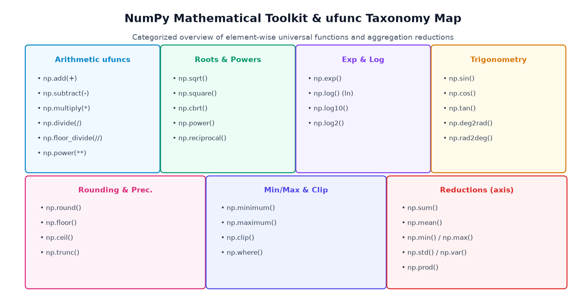
| Category | NumPy Functions | Type | Key Use Case |
|---|---|---|---|
| Arithmetic | add, subtract, multiply, divide, power |
Binary ufunc | Element-wise vector & matrix math |
| Roots & Powers | sqrt, cbrt, square, power, reciprocal |
Unary ufunc | Distances, areas, physics kinetic energy |
| Exp & Log | exp, log (ln), log10, log2 |
Unary ufunc | Decibels, machine learning entropy, growth |
| Trigonometry | sin, cos, tan, deg2rad, rad2deg |
Unary ufunc | Wave signals, sound, robotic angles (Radians!) |
| Rounding | round, floor, ceil, trunc |
Unary ufunc | Data cleaning, integer bins, currency limits |
| Min/Max & Bounding | minimum, maximum, clip, where |
Binary/Ternary | Outlier filtering, clamping valid marks |
| Reductions (axis) | sum, mean, min, max, std, var |
Reduction | Data summarization across rows or columns |
🅼 Section M: Practice & Revision Questions
Apni understanding ko test karein! Har question ke answer ko pehle khud calculate karein, phir "View Verified Solution" par click karke cross-verify karein.
Part 1: Output Prediction Questions (10 Questions)
Q1 Predict Output: np.square(np.array([-3, 0, 4]))
[ 9 0 16]Explanation:
np.square is a unary ufunc that squares each element individually: $(-3)^2 = 9$, $0^2 = 0$, $4^2 = 16$.
Q2 Predict Output: np.abs(np.array([-15, 20, -5]))
[15 20 5]Explanation:
np.abs converts negative signs to positive magnitudes without altering positive numbers.
Q3 Predict Output: np.floor(np.array([2.9, -2.1]))
[ 2. -3.]Explanation:
np.floor always rounds towards $-\infty$. For positive 2.9 it floors to 2.0; for negative -2.1 it floors down to -3.0!
Q4 Predict Output: np.trunc(np.array([2.9, -2.1]))
[ 2. -2.]Explanation:
np.trunc truncates the fractional portion towards zero. -2.1 simply becomes -2.0.
Q5 Predict Output: np.log10(np.array([1, 100, 10000]))
[0. 2. 4.]Explanation: $\log_{10}(1) = 0$, $\log_{10}(10^2) = 2$, $\log_{10}(10^4) = 4$.
Q6 Predict Output: np.sin(np.deg2rad(90))
1.0Explanation: $90^\circ$ is converted to $\pi/2$ radians (~1.5708), and $\sin(\pi/2) = 1.0$.
Q7 Predict Output: np.clip(np.array([12, 85, 115, -4]), 0, 100)
[ 12 85 100 0]Explanation: 115 is clamped down to 100; -4 is clamped up to 0; 12 and 85 remain within the valid range.
Q8 Predict Output: np.minimum(np.array([10, 50]), np.array([25, 30]))
[10 30]Explanation: Element 0: $\min(10, 25) = 10$; Element 1: $\min(50, 30) = 30$.
Q9 Predict Output: np.sum(np.array([[1, 2, 3], [4, 5, 6]]), axis=1)
[ 6 15]Explanation:
axis=1 collapses columns and sums along each row: Row 0: $1+2+3 = 6$; Row 1: $4+5+6 = 15$.
Q10 Predict Output: np.add(np.array([[10, 20], [30, 40]]), np.array([1, 2]))
[[11 22], [31 42]]Explanation: 1D row vector
[1, 2] broadcasts across both rows of the (2, 2) matrix.
Part 2: Coding Exercises (8 Exercises)
Coding 1 Calculate Euclidean Distance between two 1D coordinate vectors
Formula: $\sqrt{\sum (p - q)^2}$
import numpy as np p = np.array([1.0, 2.0, 3.0]) q = np.array([4.0, 6.0, 8.0]) diff = np.subtract(p, q) sq_diff = np.square(diff) distance = np.sqrt(np.sum(sq_diff)) print("Distance:", distance) # Output: ~7.071
Coding 2 Safe Logarithm Function that clamps inputs to positive threshold
import numpy as np def safe_log(arr): # Clamp values to minimum 1e-9 to prevent -inf / nan sanitized = np.clip(arr, 1e-9, None) return np.log(sanitized) data = np.array([-2.0, 0.0, 10.0]) print("Safe Log:", safe_log(data))
Coding 3 Normalize an array between 0.0 and 1.0 (Min-Max Scaling)
Formula: $\frac{x - x_{min}}{x_{max} - x_{min}}$
import numpy as np scores = np.array([40, 60, 80, 100]) min_v = np.min(scores) max_v = np.max(scores) normalized = np.divide(np.subtract(scores, min_v), max_v - min_v) print("Normalized:", normalized) # Output: [0. 0.33333333 0.66666667 1. ]
Coding 4 Compute Column-wise Mean and Subtract from Matrix (Centering)
import numpy as np X = np.array([[10, 20], [30, 40], [50, 60]]) col_means = np.mean(X, axis=0) # [30., 40.] centered = np.subtract(X, col_means) print("Centered Matrix:\n", centered)
Coding 5 Convert an array of angles in degrees to cosine values
import numpy as np deg = np.array([0, 60, 90, 180]) cos_vals = np.round(np.cos(np.deg2rad(deg)), 4) print("Cosine values:", cos_vals) # Output: [ 1. 0.5 0. -1. ]
Coding 6 Replace negative sensor readings with 0.0 using `np.where`
import numpy as np readings = np.array([-2.5, 14.2, -0.8, 18.9]) cleaned = np.where(readings < 0, 0.0, readings) print("Cleaned Readings:", cleaned) # Output: [ 0. 14.2 0. 18.9]
Coding 7 Calculate Softmax Probabilities using `np.exp` and `np.sum`
Formula: $\text{Softmax}(z_i) = \frac{e^{z_i}}{\sum e^{z_j}}$
import numpy as np logits = np.array([2.0, 1.0, 0.1]) exp_logits = np.exp(logits) probs = np.divide(exp_logits, np.sum(exp_logits)) print("Softmax Probabilities:", np.round(probs, 4)) print("Sum of Probabilities: ", np.sum(probs)) # Always 1.0
Coding 8 Compute Z-score standard normalization for 1D test scores
Formula: $z = \frac{x - \mu}{\sigma}$
import numpy as np data = np.array([50, 60, 70, 80, 90]) mu = np.mean(data) sigma = np.std(data) z_scores = np.divide(np.subtract(data, mu), sigma) print("Z-scores:", np.round(z_scores, 2)) # Output: [-1.41 -0.71 0. 0.71 1.41]
Part 3: Debugging Challenges (6 Questions)
Debug 1 Fix: TypeError: loop of ufunc does not support argument 0 of type list
np.sqrt([4, 9, 16]) works, but custom list methods fail when passed directly into some functions expecting ndarray.Fix: Pass an explicit NumPy array:
np.sqrt(np.array([4, 9, 16])).
Debug 2 Fix: ValueError: operands could not be broadcast together with shapes (3,4) (3,)
(3,) aligns with trailing dimension 4 of (3, 4), which fails.Fix: Expand dimensions along axis 1:
b[:, np.newaxis] gives shape (3, 1), which broadcasts smoothly with (3, 4).
Debug 3 Fix: np.sin(45) returning 0.8509 instead of 0.7071
Fix: Convert to radians:
np.sin(np.deg2rad(45)).
Debug 4 Fix: np.reciprocal(np.array([2, 5])) returning [0, 0]
Fix: Cast to float dtype:
np.reciprocal(np.array([2.0, 5.0])) → [0.5, 0.2].
Debug 5 Fix: RuntimeWarning: divide by zero encountered in log
Fix: Add a tiny epsilon:
np.log(arr + 1e-9) or clamp using np.clip(arr, 1e-9, None).
Debug 6 Fix: np.round(-2.5) returning -2.0 instead of -3.0
np.floor(-2.5).
Part 4: Multiple-Choice Questions (8 MCQs)
MCQ 1 Which of the following is NOT a universal function (ufunc) in NumPy?
np.addB)
np.sqrtC)
np.mean (Correct)D)
np.expExplanation:
np.mean is an array reduction/summary function, not a universal function.
MCQ 2 What unit of angle is expected by np.cos()?
B) Radians (Correct)
C) Gradians
D) Revolutions
Explanation: NumPy trigonometric functions always expect radians.
MCQ 3 What is the output of np.floor(-3.2)?
B) -4.0 (Correct)
C) -3.2
D) 3.0
Explanation:
np.floor rounds towards negative infinity. -4.0 is smaller than -3.2.
MCQ 4 Which function clamps array elements between minimum and maximum bounds?
np.bound()B)
np.clamp()C)
np.clip() (Correct)D)
np.limit()Explanation:
np.clip(a, a_min, a_max) is the official NumPy function for clamping.
MCQ 5 What does axis=0 indicate in np.sum(matrix, axis=0) on a 2D array?
B) Collapse columns to calculate row totals
C) Calculate the scalar total across all elements
D) Transpose the matrix
Explanation:
axis=0 reduces across the 0th dimension (rows), producing column summaries.
MCQ 6 What does np.log() compute by default?
B) Common logarithm (base 10)
C) Binary logarithm (base 2)
D) Logarithm base 100
Explanation: In standard scientific programming,
np.log() represents natural log $\ln$.
MCQ 7 What is the result of np.reciprocal(np.array([4]))?
B) 0 (Correct)
C) 4
D) Error
Explanation: Input
[4] has an integer dtype (int32/64). $1 // 4 = 0$ in integer arithmetic!
MCQ 8 Which operation represents true matrix dot product in NumPy?
A * BB)
np.multiply(A, B)C)
A @ B (Correct)D)
A ** BExplanation:
* is element-wise multiplication; @ is matrix dot product.
Part 5: Real-Life Mini Challenges (3 Challenges)
Challenge 1 Grocery Discount App: 15% discount on items > ₹500, else 5%
import numpy as np prices = np.array([120, 650, 480, 1200, 250]) discount_pct = np.where(prices > 500, 0.15, 0.05) final_prices = np.round(prices * (1 - discount_pct), 2) print("Original Prices:", prices) print("Final Prices: ", final_prices) # Output: [ 114. 552.5 456. 1020. 237.5]
Challenge 2 Sound Noise Gate: Zero out audio samples with magnitude < 0.05
import numpy as np audio_samples = np.array([0.45, -0.02, 0.01, -0.82, 0.04]) noise_gate = np.where(np.abs(audio_samples) < 0.05, 0.0, audio_samples) print("Filtered Audio:", noise_gate) # Output: [ 0.45 0. 0. -0.82 0. ]
Challenge 3 Standardized Student Performance Score (Class Percentile Scaling)
import numpy as np exam_marks = np.array([45, 62, 78, 88, 95]) scaled_0_to_100 = np.round((exam_marks - np.min(exam_marks)) / (np.max(exam_marks) - np.min(exam_marks)) * 100, 1) print("Scaled Marks (0-100 scale):", scaled_0_to_100) # Output: [ 0. 34. 66. 86. 100. ]
🅽 Section N: Mini-Project — Smart Marks and Scientific Data Analyzer
Ab tak humne jitne bhi concepts seekhe hain — binary arithmetic ufuncs, broadcasting,
clipping with np.clip, row/column aggregations with axis, absolute deviation metrics,
aur Matplotlib visualization — un sabko ek real-world end-to-end Python pipeline mein integrate karte hain!
- Ek $4 \times 3$ academic marks matrix create karein (4 Students, 3 Subjects).
- Broadcasting ke through subject-wise difficulty bonus add karein (
np.add). - Extra marks ko valid ceiling $100$ par clamp karein using
np.clip(). - Student totals aur averages (
axis=1) calculate karein. - Subject averages aur standard deviation (
axis=0) find karein. - Ek separate lab temperature sensor array se target deviation metric ($|x - 25.0|$) calculate karein.
Complete Runnable Project Code
import numpy as np print("=" * 65) print("SMART MARKS & SCIENTIFIC DATA ANALYZER") print("=" * 65) # 1. 4 Students x 3 Subjects (Maths, Physics, Chem) Matrix students = ["Aryan", "Pooja", "Rohan", "Sneha"] subjects = ["Maths", "Physics", "Chemistry"] raw_marks = np.array([ [65, 72, 80], [58, 64, 70], [85, 90, 95], [40, 48, 55] ]) print("\\n1. Raw Marks Matrix (Shape 4x3):\\n", raw_marks) # 2. Subject Bonus via Broadcasting subject_bonus = np.array([3, 2, 5]) # Shape (3,) marks_with_bonus = np.add(raw_marks, subject_bonus) # 3. Clip marks to range [0, 100] final_marks = np.clip(marks_with_bonus, 0, 100) print("\\n2. Marks After Bonus & np.clip(0, 100):\\n", final_marks) # 4. Student Analytics (axis=1: Row-wise reduction) st_totals = np.sum(final_marks, axis=1) st_avgs = np.round(np.mean(final_marks, axis=1), 2) print("\\n3. Individual Student Performance (axis=1):") for s, tot, avg in zip(students, st_totals, st_avgs): print(f" {s:6s} -> Total: {tot} / 300 | Average: {avg:5.2f}%") # 5. Subject Analytics (axis=0: Column-wise reduction) sub_means = np.round(np.mean(final_marks, axis=0), 2) sub_stds = np.round(np.std(final_marks, axis=0), 2) print("\\n4. Subject-wise Analytics (axis=0):") for sub, sm, sstd in zip(subjects, sub_means, sub_stds): print(f" {sub:10s} -> Class Average: {sm:5.2f} | Spread (Std): {sstd:5.2f}") # 6. Scientific Sensor Analysis lab_sensors = np.array([24.2, 25.8, 23.9, 27.1, 24.8, 26.5]) target_temp = 25.0 sensor_devs = np.abs(np.subtract(lab_sensors, target_temp)) print("\\n5. Lab Sensor Deviation Analysis:") print(" Recorded Sensor Readings (°C):", lab_sensors) print(" Absolute Deviations (|x - 25|):", np.round(sensor_devs, 2)) print(" Mean Sensor Error: ", np.round(np.mean(sensor_devs), 2), "°C") print("=" * 65)